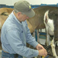
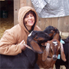

Home
Calendar
Newsletter
Farmers
Chefs
Projects
Past Events
|
|
Leslie Cooperband and Wes Jarrell
What are two Ph.D. soil scientists, one from Massachusetts and the other from Oregon, doing elbow-deep in goat milk in rural central Illinois?
Itís a long and serendipitous story, but Leslie Cooperband and Wes Jarrell are the proud owners of the first on-farm goat fromagerie in Illinois. They feed their 50 Nubian and La Mancha goats on high-quality local hay and pasture and use only their own milk in the cheeses they make. In their state-of-the-art Grade A facility certified by the Illinois Department of Public Health, they make high quality goat cheese by hand, using a mixture of artisan methods and modern technology.
 |
 |
 |
During the goats' lactation period, Leslie and Wes milk the goats twice a day. About 21 to 22 gallons of milk are required to make 40 pounds of cheese. The cheese is made by hand and aged for different periods of time to produce a variety of cheeses, including fresh chevre and soft-rind, aged cheeses such as Prairie Blazing Star Banon, an ìall-Illinoisî banon-style cheese made with maple or sycamore leaves from their farm that have been soaked in an Illinois Chambourcin wine, ìLittle Bloom on the Prairie,î a creamy, soft Camembert-style cheese, ìAngel Food,î a bloomy rind cheese made in the style of a French Coulommier and ìPrairie Burn,î an ashed, soft-rind cheese.
In 2004, Wes and Leslie planted 350 fruit trees and 600 berry plants, for the ìfruitî component of Prairie Fruits Farm; the fruit operation is now certified organic.
In addition, Leslie and Wes are involved in promoting and building locally based food systems. They strive to educate the community about organic and sustainable agriculture and the connections between food production and consumption. Their dream is for their ìfarmstead to be diverse (fruit and goats), sustainable (environmentally, socially and economically) and to serve as a model for others interested in small-scale diversified farming systems." Who says that Central Illinois has no terroire?
Leslie and Wes sell their products at markets, restaurants, and retail locations in Central Illinois and in Chicago, including the Urbana Farmers' Market and Chicagoís Green City Market on Saturdays. Their cheese can also be found at several Chicago establishments, such as Pastoral Bread Cheese & Wine and the Marion Street Cheese Market in Oak Park, and at some of Chicago's finest restaurants, including Blackbird and North Pond.
The Ph.D.s continue to be put to good use at the University of Illinois where Wes is the head of the Department of Natural Resources and Environmental Sciences, and Leslie is a part time Extension Specialist of Sustainable Agriculture and Community Development in the Laboratory for Community and Economic Development.
Slow Food Chicago is proud to have Leslie and Wes represent our Convivium as delegates to the October 2006 Terra Madre Congress in Turin, Italy.
|
|